A Look At ggplot
Table of Contents
Introduction
This is a quick walk-through of some aspects of ggplot2 based on the first chapter of {% doc %}r-for-data-science{% /doc %}.
Set Up Stuff
Imports
Note: When you run the first code block to start the session, remember to give it the path to the posts-output folder so you don't need the path when saving the plots.
library("assertthat")
library("ggplot2")
library("knitr")
library("tidyverse")
Constants
These are stuff that get re-used in the plotting.
DISPLACEMENT <- "Engine Displacement (Liters)"
EFFICIENCY <-"Gallons Per Mile (Combined)"
DISPLACEMENT_VS_EFFICIENCY = partial(labs, x=DISPLACEMENT, y=EFFICIENCY)
BLUE <- "#4687b7"
RED <- "#ce7b6d"
The GGPlot2 Theme
theme_set(theme_minimal(base_family="Palatino"))
The MPG Dataset
For some reason loading ggplot2 also loads this dataset. Its short description is "Fuel economy data from 1999 to 2008 for 38 popular models of cars". The long description:
This dataset contains a subset of the fuel economy data that the EPA makes available on <URL: https://fueleconomy.gov/>. It contains only models which had a new release every year between 1999 and 2008 - this was used as a proxy for the popularity of the car.
The Variables
It's a data frame with 234 rows and 11 variables:
| Variable | Description |
|---|---|
| manufacturer | manufacturer name |
| model | model name |
| displ | engine displacement, in litres |
| year | year of manufacture |
| cyl | number of cylinders |
| trans | type of transmission |
| drv | drive train (listed below) |
| cty | city miles per gallon |
| hwy | highway miles per gallon |
| fl | fuel type |
| class | "type" of car |
I'll do some column renaming here since I keep forgetting what abbreviations they used.
Renaming Some Columns
mpg <- mpg %>%
rename(
displacement=displ,
cylinders=cyl,
transmission=trans,
drive_train=drv,
city_mpg=cty,
highway_mpg=hwy,
fuel_type=fl,
)
str(mpg)
tibble [234 × 11] (S3: tbl_df/tbl/data.frame) $ manufacturer: chr [1:234] "audi" "audi" "audi" "audi" ... $ model : chr [1:234] "a4" "a4" "a4" "a4" ... $ displacement: num [1:234] 1.8 1.8 2 2 2.8 2.8 3.1 1.8 1.8 2 ... $ year : int [1:234] 1999 1999 2008 2008 1999 1999 2008 1999 1999 2008 ... $ cylinders : int [1:234] 4 4 4 4 6 6 6 4 4 4 ... $ transmission: chr [1:234] "auto(l5)" "manual(m5)" "manual(m6)" "auto(av)" ... $ drive_train : chr [1:234] "f" "f" "f" "f" ... $ city_mpg : int [1:234] 18 21 20 21 16 18 18 18 16 20 ... $ highway_mpg : int [1:234] 29 29 31 30 26 26 27 26 25 28 ... $ fuel_type : chr [1:234] "p" "p" "p" "p" ... $ class : chr [1:234] "compact" "compact" "compact" "compact" ...
Looking at the Data
kable(head(mpg), caption="MPG Dataset (EPA Automobile Data)")
Table: MPG Dataset (EPA Automobile Data)
| manufacturer | model | displacement | year | cylinders | transmission | drive_train | city_mpg | highway_mpg | fuel_type | class |
|---|---|---|---|---|---|---|---|---|---|---|
| audi | a4 | 1.8 | 1999 | 4 | auto(l5) | f | 18 | 29 | p | compact |
| audi | a4 | 1.8 | 1999 | 4 | manual(m5) | f | 21 | 29 | p | compact |
| audi | a4 | 2.0 | 2008 | 4 | manual(m6) | f | 20 | 31 | p | compact |
| audi | a4 | 2.0 | 2008 | 4 | auto(av) | f | 21 | 30 | p | compact |
| audi | a4 | 2.8 | 1999 | 6 | auto(l5) | f | 16 | 26 | p | compact |
| audi | a4 | 2.8 | 1999 | 6 | manual(m5) | f | 18 | 26 | p | compact |
Some Renaming
The Drive Trains
| Abbreviation | Meaning |
|---|---|
| f | Front-Wheel Drive |
| r | Rear-Wheel Drive |
| 4 | Four-Wheel Drive |
These aren't too obscure, but I think I'll rename them anyway.
mpg$drive_train <- recode(mpg$drive_train,
f="Front-Wheel", r="Rear-Wheel", `4`="Four-Wheel" )
kable(unique(mpg$drive_train), col.names=c("Drives"))
| Drives |
|---|
| Front-Wheel |
| Four-Wheel |
| Rear-Wheel |
assert_that(noNA(mpg$drive_train))
Fuel Types
Although this is about ggplot2, and the data is sort of a side effect, since I had to look some of this data up to figure out what it meant (at fueleconomy.gov) I'll use this opportunity to document it by updating the data.
mpg$fuel_type <- recode(mpg$fuel_type,
p="Premium Unleaded",
r="Regular Unleaded",
e="Ethanol",
d="Diesel Fuel",
c="Compressed Natural Gas")
kable(unique(mpg$fuel_type), col.names = c("Fuel Type"))
| Fuel Type |
|---|
| Premium Unleaded |
| Regular Unleaded |
| Ethanol |
| Diesel Fuel |
| Compressed Natural Gas |
For some reason I couldn't find a table that directly mapped to the data set so I'm sort of guessing that this is what they stood for based on the 1999 guide on their download page. There's also a L for Liquified Petroleum Gas (Propane) in the guide but it's not in the data set.
assert_that(noNA(mpg$fuel_type))
Transmission
mpg$transmission <- recode(mpg$transmission,
`auto(av)`="Continuously Variable",
`auto(s4)`="Automatic 4-Speed",
`auto(s5)`="Automatic 5-Speed",
`auto(s6)`="Automatic 6-Speed",
`auto(l3)`="Automatic Lockup 3-Speed",
`auto(l4)`="Automatic Lockup 4-Speed",
`auto(l5)`="Automatic Lockup 5-Speed",
`auto(l6)`="Automatic Lockup 6-Speed",
`manual(m5)`="Manual 5-Speed",
`manual(m6)`="Manual 6-Speed"
)
kable(unique(mpg$transmission), col.names = c("Transmission"))
| Transmission |
|---|
| Automatic Lockup 5-Speed |
| Manual 5-Speed |
| Manual 6-Speed |
| Continuously Variable |
| Automatic 6-Speed |
| Automatic Lockup 4-Speed |
| Automatic Lockup 3-Speed |
| Automatic Lockup 6-Speed |
| Automatic 5-Speed |
| Automatic 4-Speed |
Strangely, there's no listing for 4-speed manual transmissions.
assert_that(noNA(mpg$transmission))
Displacement Vs Highway Mileage
Now we come to the basic thing that the chapter in R For Data Science looks at (mostly) - what affects mileage for automobiles. The first thing we'll do is look at how the size of the engine affects the mileage.
plot = ggplot(data=mpg) +
geom_point(mapping=aes(x=displacement, y=highway_mpg, color=highway_mpg)) +
labs(x=DISPLACEMENT, y="Highway MPG",
title="Displacement vs Mileage")
filename = "displacement_vs_mileage.png"
ggsave(filename)
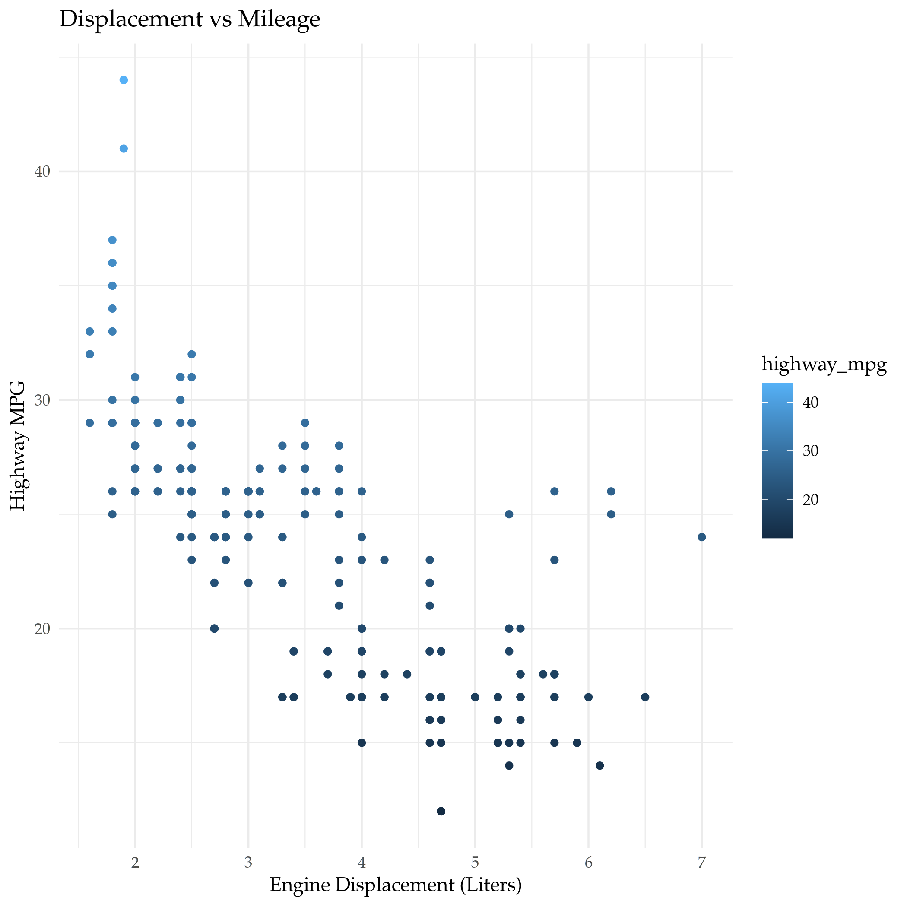
It has a roughly linear relationship, as you might expect, but the rest of this post is about how to get more information out of the data using ggplot2.
Ditching the Highway (Mileage)
Combined Mileage
The EPA uses a weighted average to create a combined metric that uses both Highway and City mileage.
\[ \textrm{Combined Fuel Economy} = 0.55 \times \textit{city} + 0.45 \times \textit{highway} \]
I've also seen it done as the harmonic mean (on Illustrative Mathematics), but if you round to the nearest whole number it comes out about the same.
mpg$combined_fuel_economy <- 0.55 * mpg$city_mpg + 0.45 * mpg$highway_mpg
plot = ggplot(data=mpg) +
geom_point(mapping=aes(x=displacement, y=combined_fuel_economy, color=combined_fuel_economy)) +
labs(x=DISPLACEMENT, y="Combined MPG",
title="Displacement vs Mileage")
filename = "displacement_vs_combined_mileage.png"
ggsave(filename)
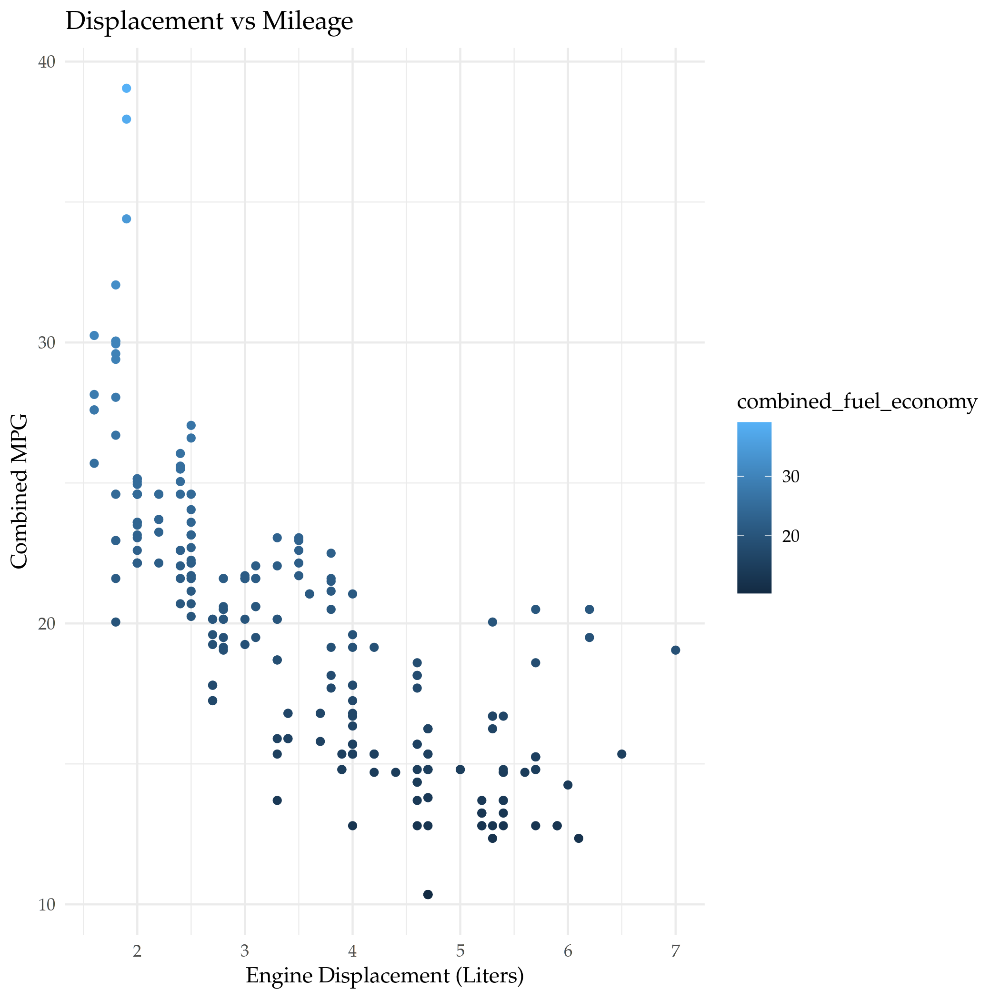
Comparing the Two
We can plot them together to see how much the combined MPG differs from the highway MPG.
plot = ggplot(data=mpg) +
geom_smooth(mapping=aes(x=displacement, y=combined_fuel_economy), color="red") +
geom_smooth(mapping=aes(x=displacement, y=highway_mpg), color="blue") +
labs(x=DISPLACEMENT, y="MPG",
title="Displacement vs Mileage (Highway and Combined)")
filename = "highway_vs_combined_mileage.png"
ggsave(filename)
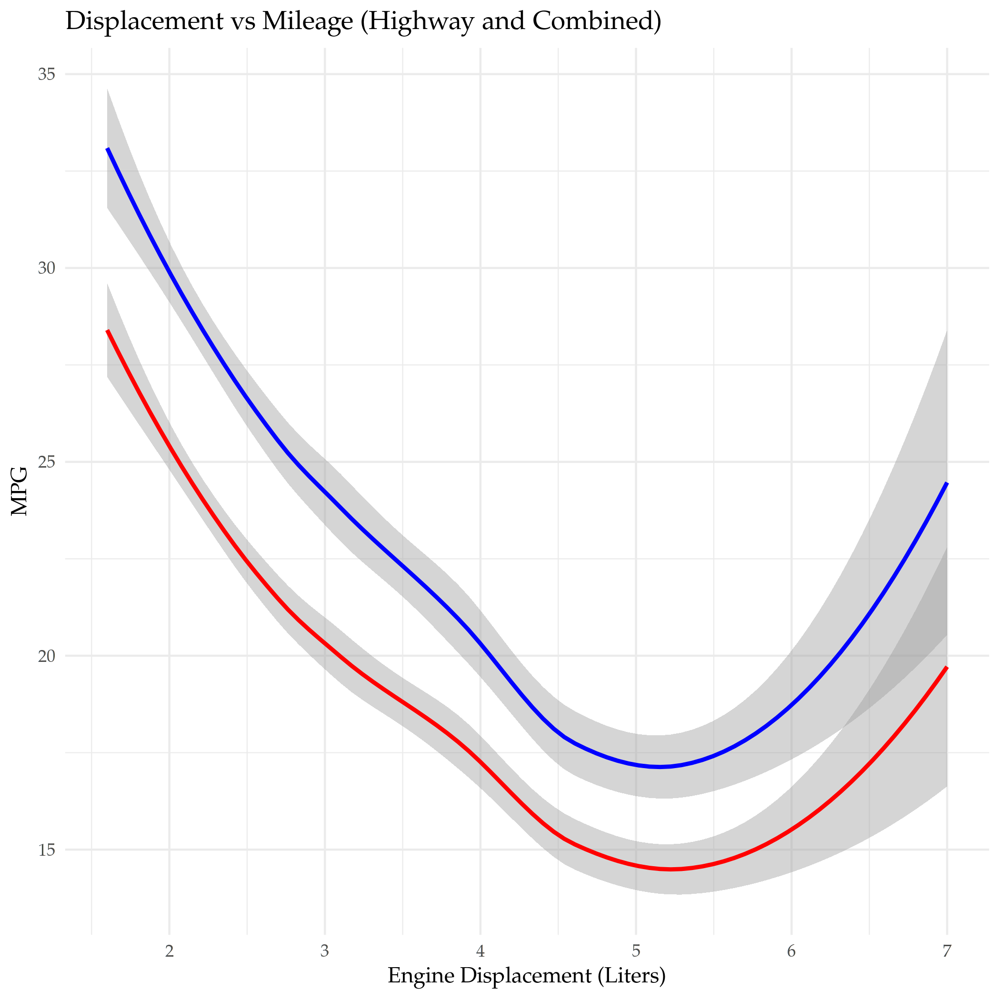
Adding the city mileage drops the mileage somewhat, although the line looks to be about the same shape.
Gallons Per Mile
The EPA's explanation of their vehicle labels mentions that the reason why they put a Fuel Consumption Rate is that the Miles Per Gallon metric is actually not a good way to compare mileage - it is subject to a "Miles Per Gallon Illusion" (ReaClearScience has an article about it). Here's how the number of gallons used per 1,000 miles driven changes with miles-per-gallon.
mileage <- seq(1, 100)
miles = 1000
gallons_per_1000_miles <- miles/mileage
improvement <- data.frame(MPG=mileage,
gallons=gallons_per_1000_miles)
plot = ggplot(data=improvement) +
geom_point(mapping=aes(x=mileage, y=gallons), alpha=0.5, color="blue") +
geom_line(mapping=aes(x=mileage, y=gallons), color="blue") +
labs(title="Fuel Consumption vs MPG",
x="Miles Per Gallon",
y="Gallons Used Per 1,000 Miles")
ggsave("gallons_vs_mpg.png")
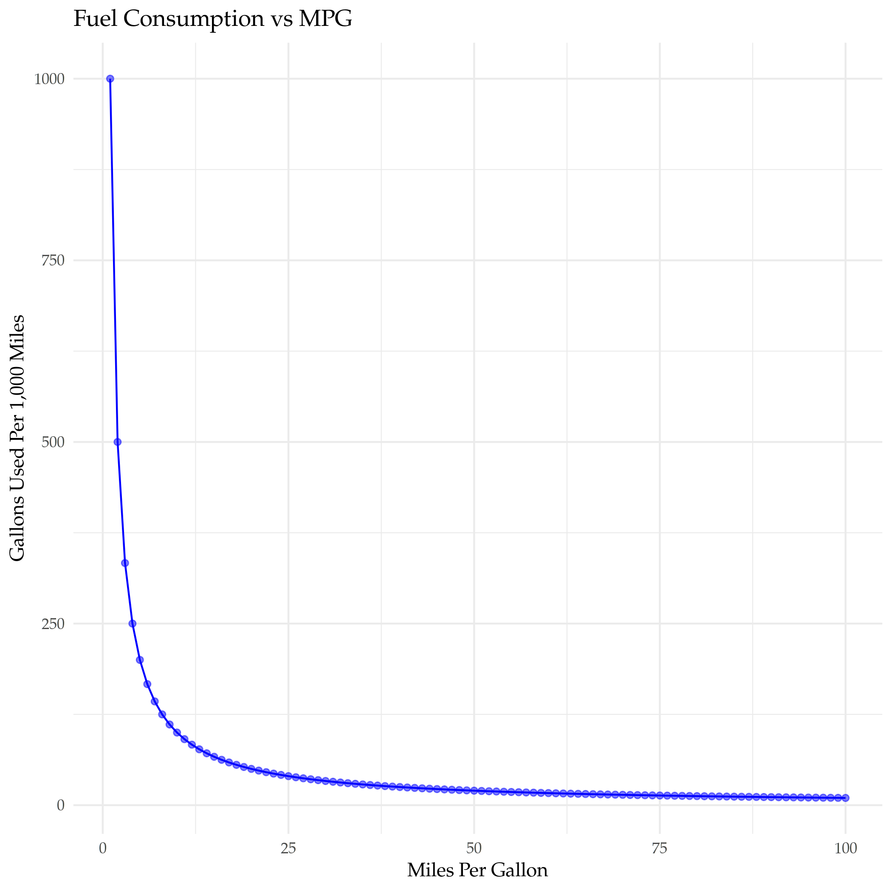
As you can see the improvement in the number of gallons used goes down pretty fast as the miles-per-gallon goes up. Let's see about adding a fuel-efficency column. What happens when you switch to Gallons Per Mile?
gallons_per_mile <- mileage
gallons_per_1000_miles <- miles * gallons_per_mile
improvement <- data.frame(gpm=gallons_per_mile,
gallons=gallons_per_1000_miles)
plot = ggplot(data=improvement) +
geom_point(mapping=aes(x=gpm, y=gallons), alpha=0.5, color="blue") +
geom_line(mapping=aes(x=gpm, y=gallons), color="blue") +
labs(title="Fuel Consumption vs Gallons Per Mile",
x="Gallons Per Mile",
y="Gallons Used Per 1,000 Miles")
ggsave("gallons_vs_efficiency.png")
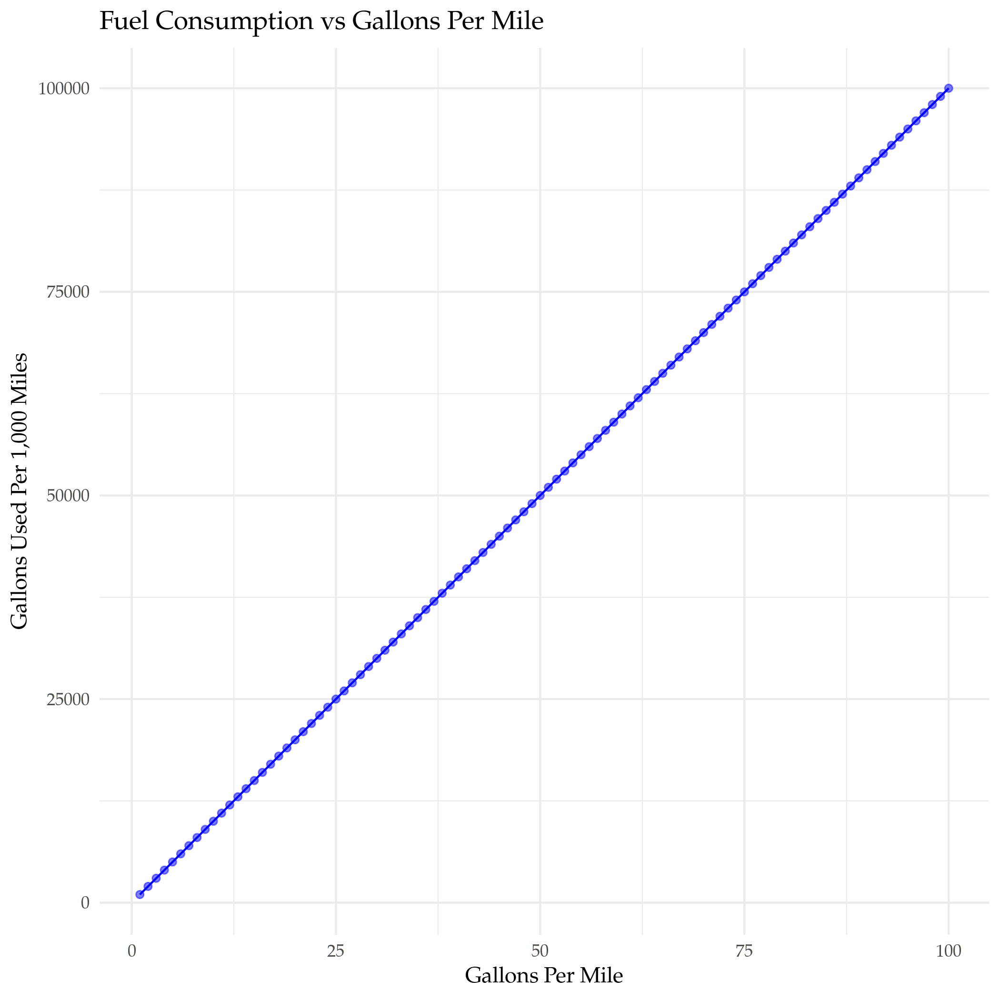
I suppose you could just figure that that'd be the case, but this is about plotting.
mpg$gallons_per_mile <- 1/mpg$combined_fuel_economy
plot = ggplot(data=mpg, mapping=aes(x=displacement, y=gallons_per_mile)) +
geom_point() +
DISPLACEMENT_VS_EFFICIENCY(title="Displacement vs Fuel Efficiency")
filename = "displacement_vs_fuel_efficiency.png"
ggsave(filename)
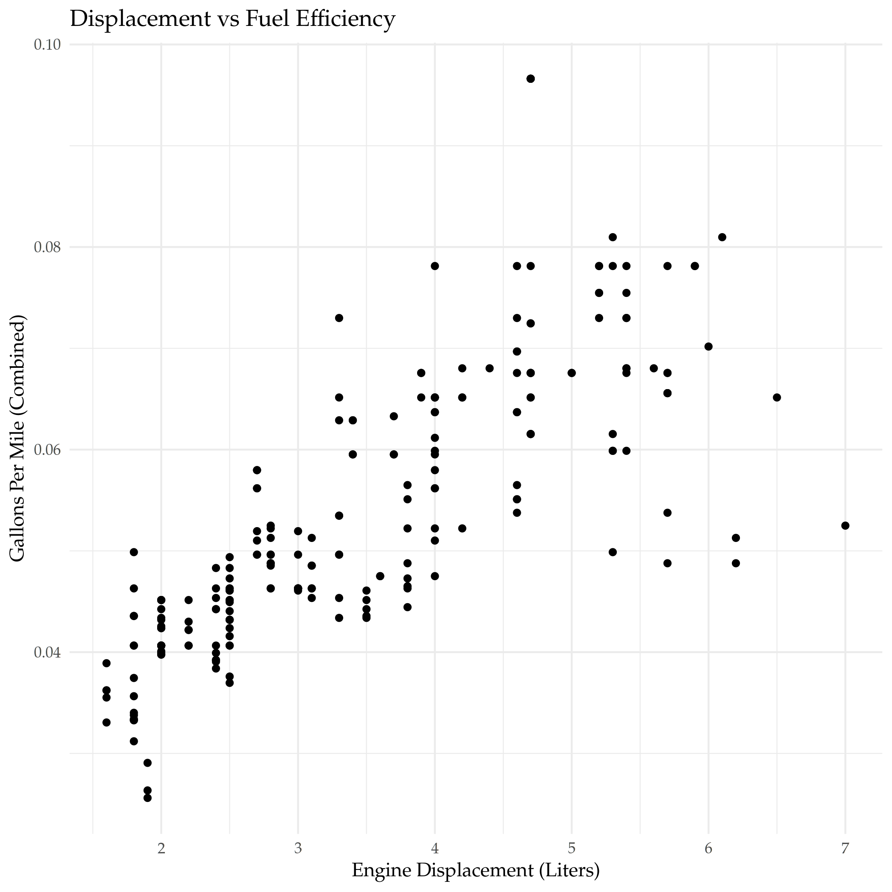
Even though this is just the inverse of the MPG plot it seems more intuitive to me. I didn't really notice that big outlier at the top when I plotted it using MPG, so I think I'll stick with this.
Displacement With Class
The displacement seems to mostly have a linear relationship with mileage, but there's exceptions, let's see if showing the class of the car reveals any interesting patterns.
unique(mpg$class)
[1] "compact" "midsize" "suv" "2seater" "minivan" [6] "pickup" "subcompact"
Efficiency
plot = ggplot(data=mpg) +
geom_point(mapping=aes(x=displacement, y=gallons_per_mile, color=class),
position="jitter") +
DISPLACEMENT_VS_EFFICIENCY(title="Displacement vs Fuel Efficiency")
filename = "displacement_vs_mileage_with_class.png"
ggsave(filename)
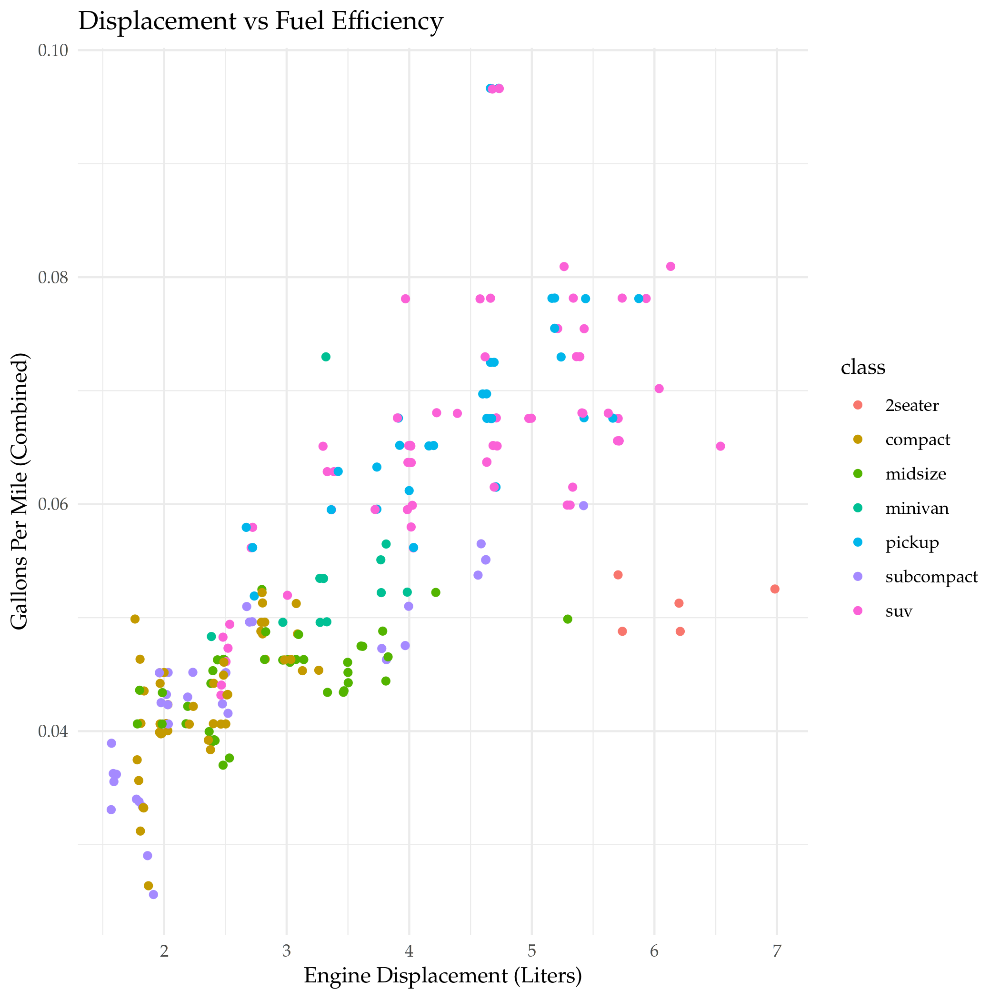
I added a little jitter because it looked like the top outlier was just one point. It looks like 2-seaters and one of the mid-sized cars had unusually good mileage given their engine displacement. What's a two-seater?
kable(filter(mpg, class=="2seater"))
| manufacturer | model | displacement | year | cylinders | transmission | drive_train | city_mpg | highway_mpg | fuel_type | class | combined_fuel_economy | gallons_per_mile |
|---|---|---|---|---|---|---|---|---|---|---|---|---|
| chevrolet | corvette | 5.7 | 1999 | 8 | Manual 6-Speed | Rear-Wheel | 16 | 26 | Premium Unleaded | 2seater | 20.50 | 0.0487805 |
| chevrolet | corvette | 5.7 | 1999 | 8 | Automatic Lockup 4-Speed | Rear-Wheel | 15 | 23 | Premium Unleaded | 2seater | 18.60 | 0.0537634 |
| chevrolet | corvette | 6.2 | 2008 | 8 | Manual 6-Speed | Rear-Wheel | 16 | 26 | Premium Unleaded | 2seater | 20.50 | 0.0487805 |
| chevrolet | corvette | 6.2 | 2008 | 8 | Automatic 6-Speed | Rear-Wheel | 15 | 25 | Premium Unleaded | 2seater | 19.50 | 0.0512821 |
| chevrolet | corvette | 7.0 | 2008 | 8 | Manual 6-Speed | Rear-Wheel | 15 | 24 | Premium Unleaded | 2seater | 19.05 | 0.0524934 |
Just Corvettes here.
Faceting The Classes
While the use of color is useful for comparing the classes on the same plot, sometimes it can be easier to interpret plots that have the categorical classes separated into sub-plots (called facets).
By default the faceting functions use aphabetical order, I'm going to use a slightly different ordering to see if it makes it clearer how the classes compare (this is based on the medians that I plotted below).
mpg$class_order <- factor(mpg$class,
levels=c("compact", "subcompact", "midsize",
"2seater",
"minivan", "suv", "pickup"))
plot = ggplot(data=mpg) +
geom_point(mapping=aes(x=displacement, y=gallons_per_mile, color=gallons_per_mile)) +
facet_grid(. ~ class_order) +
DISPLACEMENT_VS_EFFICIENCY(title="Displacement vs Efficiency")
filename = "displacement_vs_mileage_faceted_classes.png"
ggsave(filename)
I'm using facet_grid here, which is actually meant to use two variables (creating row and column separation). By putting the . before the ~ we're telling it to only facet using columns. There's also a facet_wrap function that only does one variable but adds the ability to specify the number of rows you want to use, which might be helpful if you have a lot of classes.
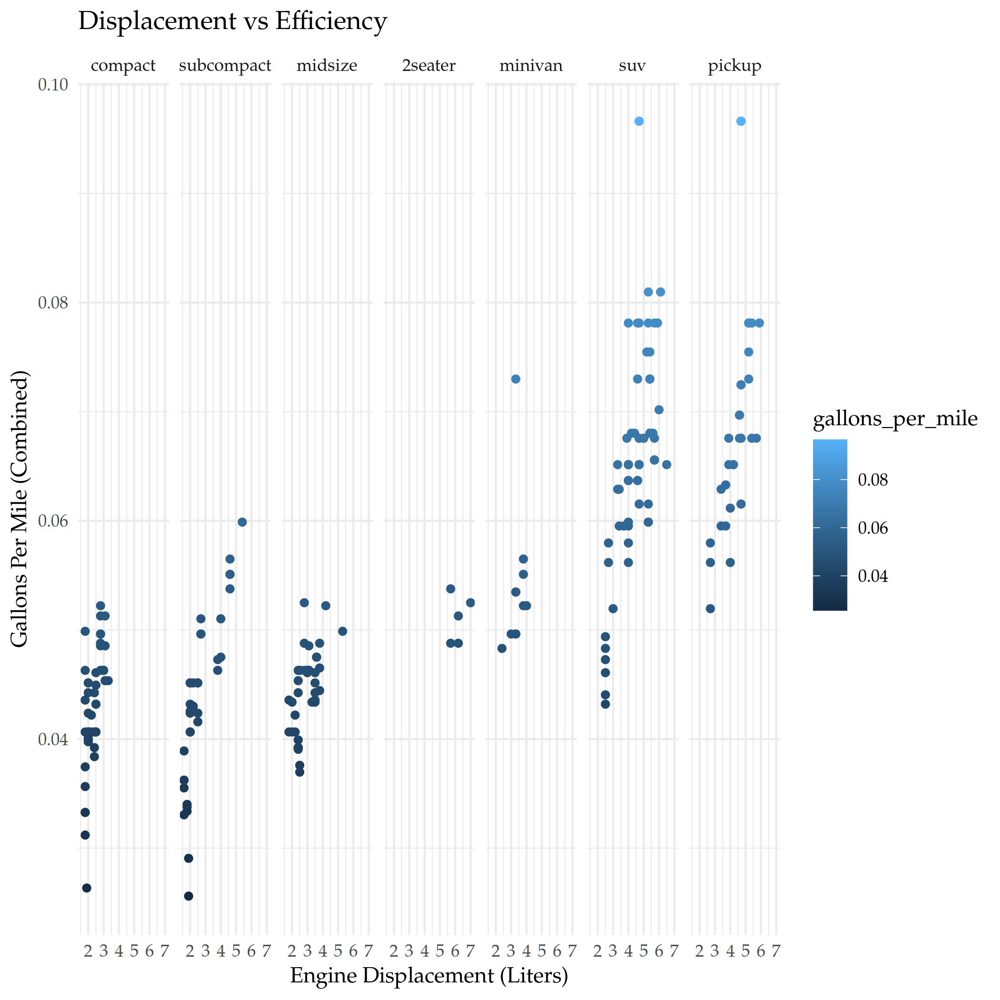
I wouldn't have thought it, but the Corvette falls between the minivan and the sub-compact for fuel efficiency. I guess when you consider that it can only be used to transport two people and not anything relatively large it's still inefficient, just not as much if you're only using it to commute.
Smoothing the Line
Instead of plotting a scatterpoint, you can use geom_smooth to fit a single line representing the trend for the data (using a linear model).
plot = ggplot(data=mpg, mapping=aes(x=displacement, y=gallons_per_mile)) +
geom_smooth() +
geom_point() +
facet_grid(class_order ~ drive_train) +
DISPLACEMENT_VS_EFFICIENCY(title="Displacement vs Efficiency By Type")
ggsave("displacement_vs_mileage_smooth.png")
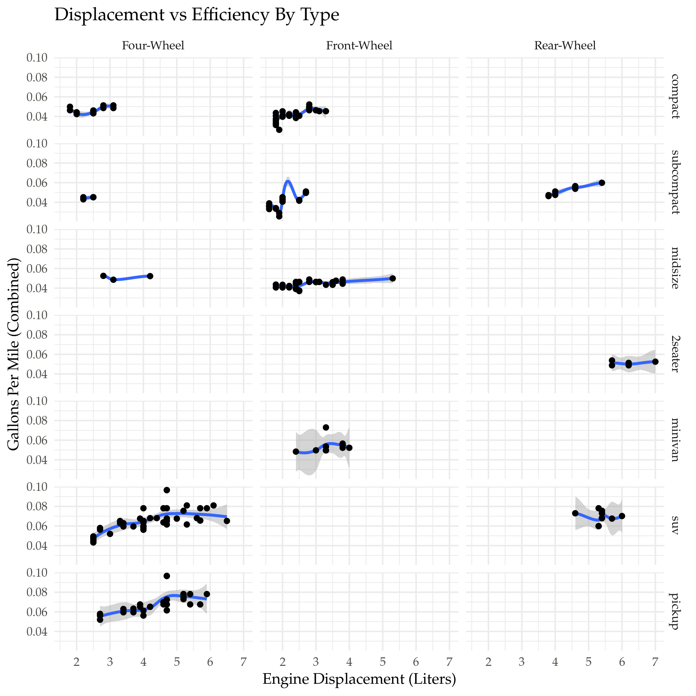
One interesting thing here is that the four-wheel-drive compact and sub-compact cars did better than some of the front-wheel drive cars in the same class.
If you look at the front-wheel-drive sub-compact cars you'll see that the curve-fitting can get a little funky if you're not careful.
Note the syntax for the plot. Before we were passing the aes mapping to the geometry object. You can do that here too, but if you pass it to the ggplot call then it will automatically apply it to all the geometries. If you wanted to then change one of them you could pass in the aes mapping to it and override the base mapping you gave to ggplot.
Different Datasets to the Geometries
Besides passing in different aes mappings, you can also pass in different sub-sets of the data to each geometry (using dplyr's filter to isolate the SUVs here).
plot = ggplot(data=mpg, mapping=aes(x=displacement, y=gallons_per_mile)) +
geom_smooth(data=filter(mpg, class=="suv")) +
geom_point(mapping=aes(color=class), position="jitter") +
DISPLACEMENT_VS_EFFICIENCY(title="Displacement vs Fuel Efficiency")
filename = "displacement_vs_mileage_subsets.png"
ggsave(filename)
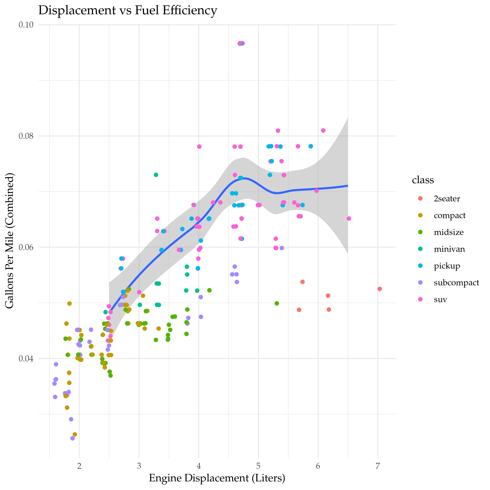
Looking at the trend-line for SUVs you can see that it encompasses a surprising swath of the displacements, and it is mostly upwardly linear to begin with but then flattens out.
plot = ggplot(
data = mpg,
mapping = aes(x = displacement, y = gallons_per_mile, color = drive_train)
) +
geom_point() +
geom_smooth(se = FALSE) +
DISPLACEMENT_VS_EFFICIENCY(title="Effect of Drive (Four, Front, or Rear) on Mileage")
ggsave("displacement_exercise_2.png")
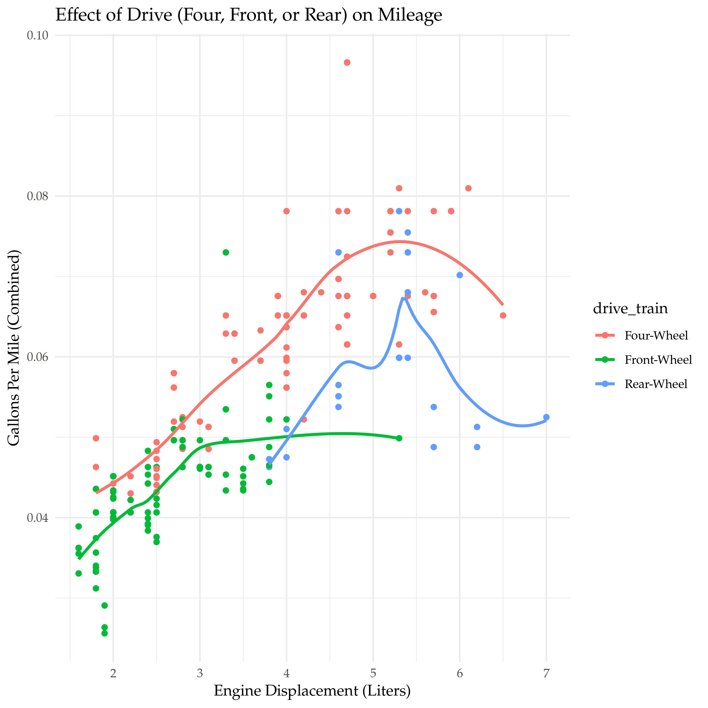
It kind of looks like an emerging pattern that up to a point gasoline consumption goes up with engine size but then once a certain point is passed consumption flattens out, even as the engines get bigger.
Small Four-Wheel Drive Automobiles
Just out of curiosity, I'd like to see what those small four-wheel drive cars are.
small <- filter(mpg, displacement<3 & drive_train=="Four-Wheel")
plot = ggplot(
data=small,
mapping=aes(x=displacement, y=gallons_per_mile, color=model)
) +
geom_point() +
facet_grid(class_order ~ manufacturer) +
DISPLACEMENT_VS_EFFICIENCY(title="4WD Less Than 3 Liters")
ggsave("small_4wd.png")
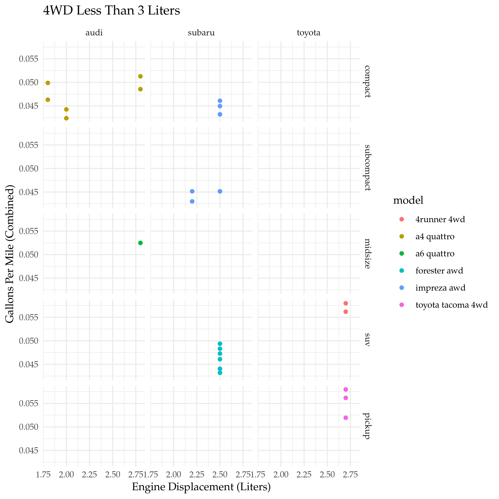
There are only three companies making these small four-wheel-drive automobiles, with Audi being the one focused on sedans.
Bar Plots
By Count
The Bar Plot is an example of what the Grammar of Graphics calls a Statistical Transformation (I guess the scatter plots are so called "Identity" transformations, but, whatever). It doesn't display the values in the data (unless you tell it to) but instead shows how often categorical values appear in the data. We can also have it set the color to create a stacked bar plot.
plot = ggplot(data=mpg) +
geom_bar(
mapping = aes(x=class_order, fill=drive_train)
) +
labs(title="Count of Cars by Class", x="Class Ordered by Median MPG", y="Count")
ggsave("class_count.png")
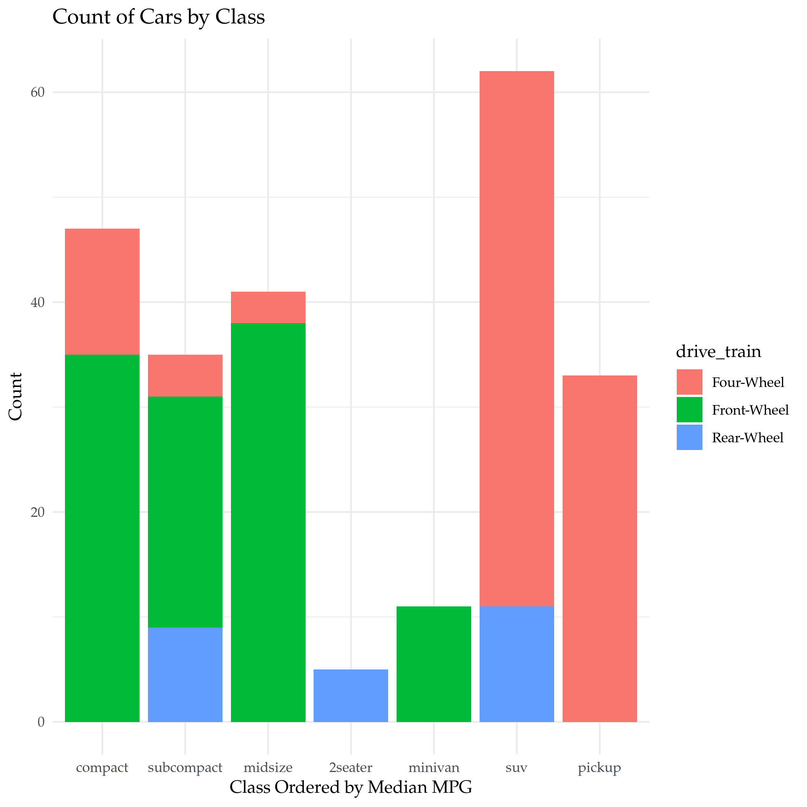
So most models of car are SUVs, how disheartening. This is only a sub-set of cars, though, and it doesn't reflect sales, just model counts.
By Proportion
Instead of using counts we can use proportions to show how the sub-category portions compare across categories.
plot = ggplot(data=mpg) +
geom_bar(
mapping = aes(x=class_order, fill=drive_train),
position="fill"
) +
labs(title="Proportion of Drives by Class", x="Class Ordered by Median MPG", y="Proportion")
ggsave("class_count_filled.png")
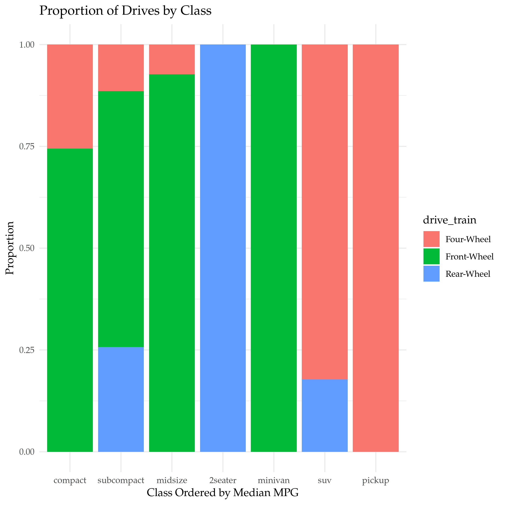
This shows what proportion if each class of car has what type of drive.
Un-Stacked
To make it easier to see how sub-categories compare within the class, we can change the positioning so that the bars are put side-by-side.
plot = ggplot(data=mpg) +
geom_bar(
mapping = aes(x=class_order, fill=drive_train),
position="dodge"
) +
labs(title="Count of Model Drives by Class", x="Class Ordered by Median MPG", y="Count")
ggsave("class_count_dodged.png")
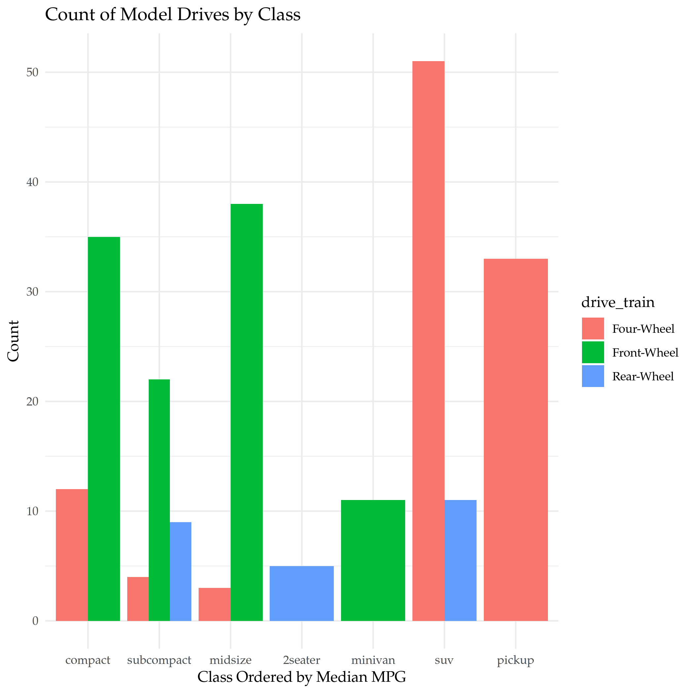
Proportions Not Counts
Our original bar graph showed the counts, but we can show the same plot using the proportion that each categories' count is of the total count as the y-axis.
plot = ggplot(data=mpg, mapping=aes(color=class)) +
geom_bar(
mapping = aes(x=class_order, y=..prop.., group=1)
) +
labs(title="Proportion of Cars by Class", x="Class Ordered by Median MPG", y="Proportion")
ggsave("class_proportion.png")
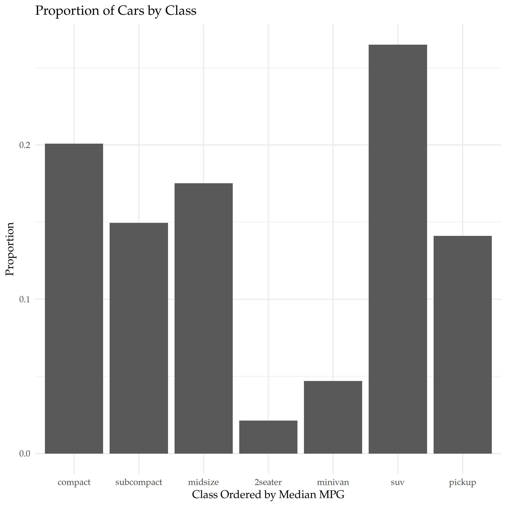
Two things:
- That funky
..prop..is really how R specifies that argument - The
group=1argument tells ggplot that there's only one group for the whole dataset, otherwise each category is taken as a separate group and they are all end up as 100% of their group. - I couldn't get ggplot to set the colors based on the class
Stat Summary
This is a way to plot different kinds of summary statistics for the dataset.
plot = ggplot(data=mpg) +
stat_summary(
mapping = aes(x=class_order, y=gallons_per_mile, color=class_order),
fun.min = min,
fun.max = max,
fun = median
) +
labs(title="Spread of Efficiency by Class", y=EFFICIENCY, x="Class")
ggsave("mpg_class_spread.png")
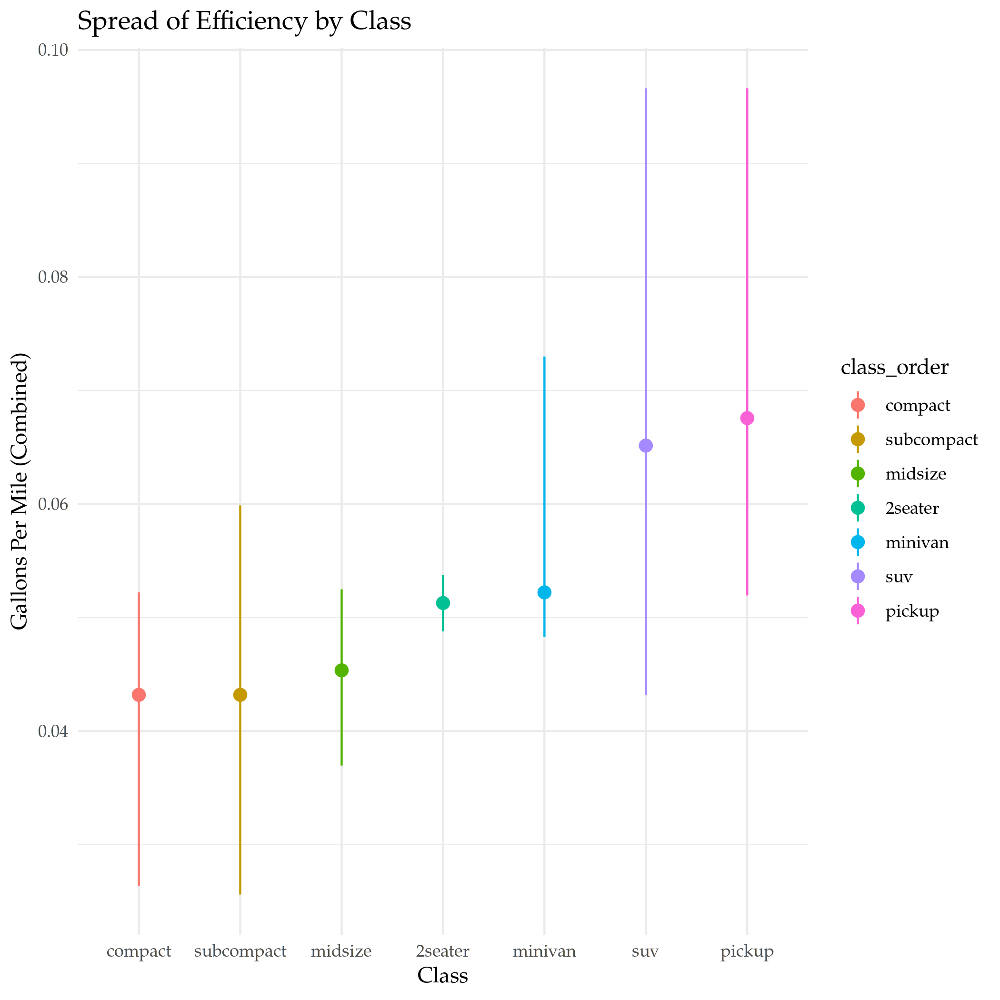
Boxplot
That was a nice clean way to show it, and it's flexible, but maybe a good old-fashioned box-plot is the best, in the end.
plot = ggplot(data=mpg) +
geom_boxplot(
mapping = aes(x=class_order, y=gallons_per_mile, color=class_order),
) +
labs(title="Spread of Efficiency by Class", y=EFFICIENCY, x="Class")
ggsave("mpg_class_boxplot.png")
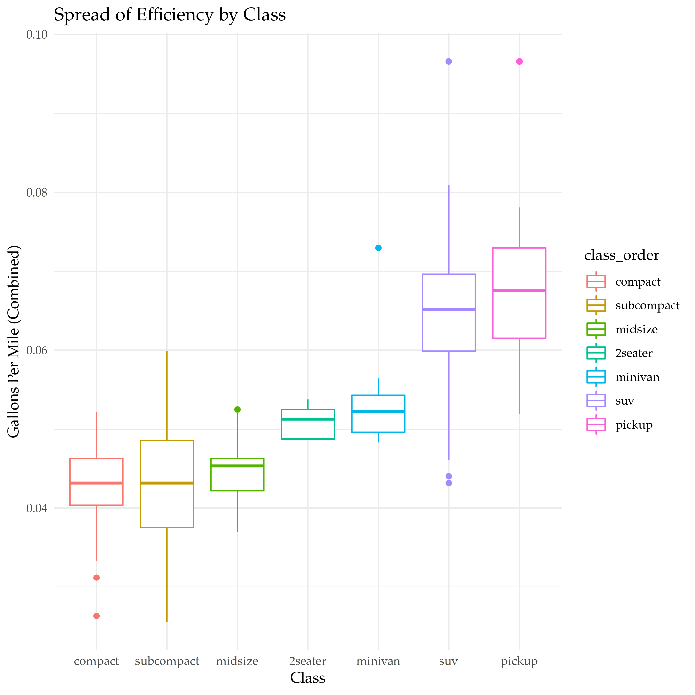
The End
Well, that's more than enough of that. The Chapter in R For Data Science has other stuff in there, in particular there's a section on changing the coordinate system, but I think it's time to move on.
Link Collection
- fueleconomy.gov: the federal government's site on fuel efficiency for cars sold in the United States
- ggplot2 main page
- RealClear Science on the MPG Illusion
- The Grammar of Graphics: This is a page on the University of Chicago's Computing For Social Sciences site that has an explanation of what makes up the Layered Grammar of Graphics that
ggplot2is based on.